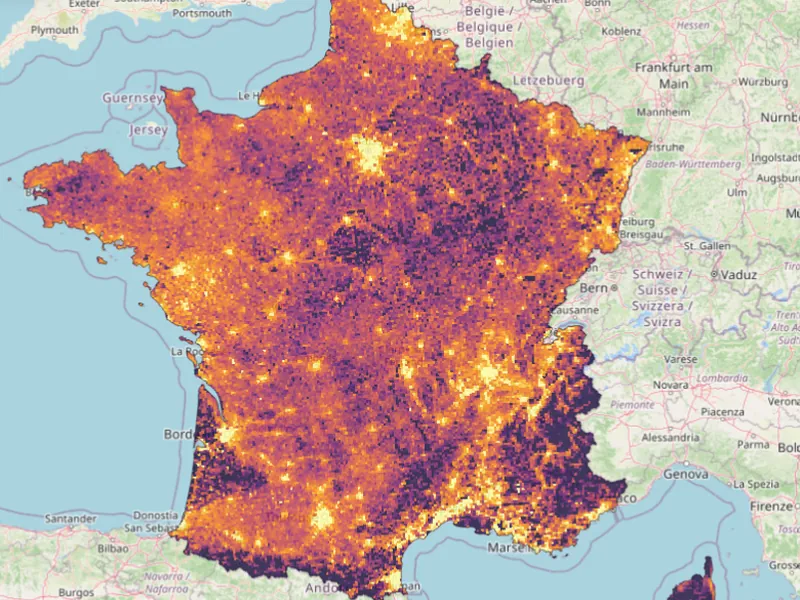
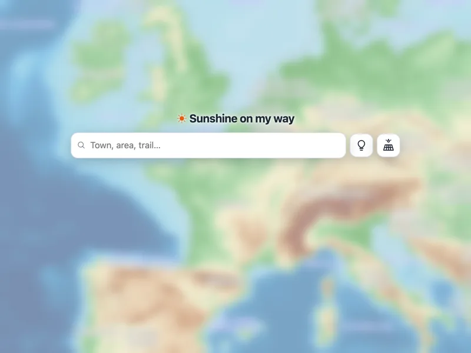
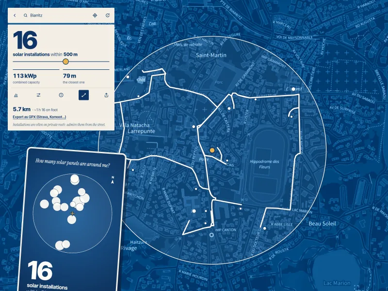
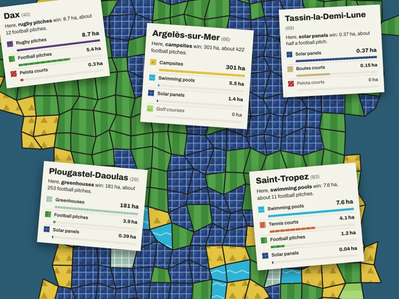
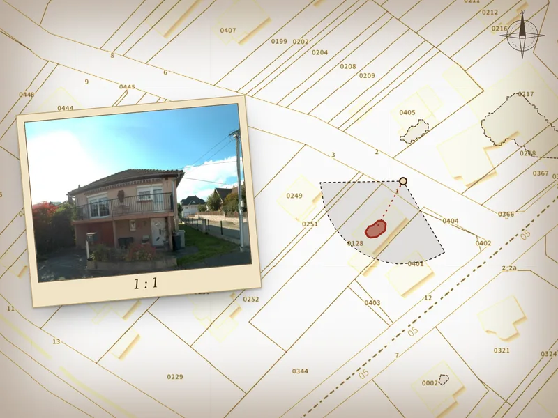
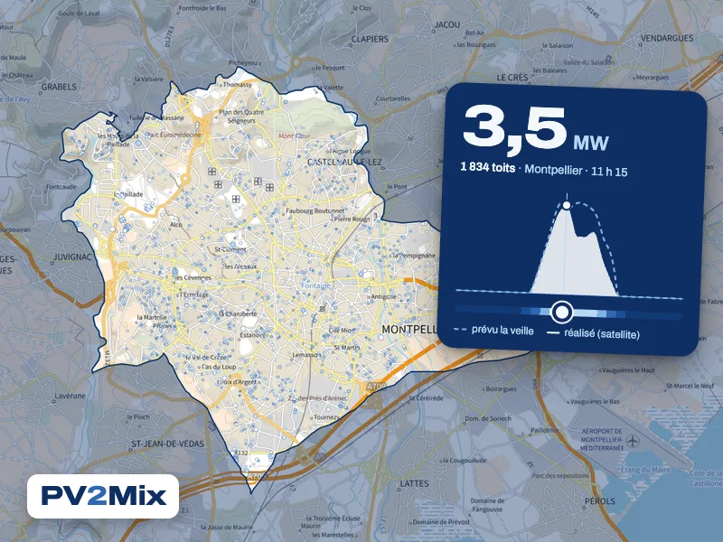
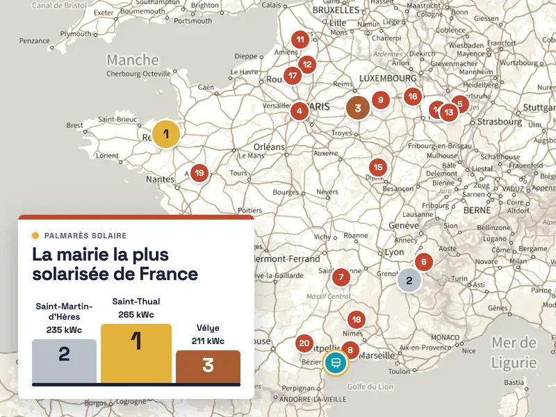
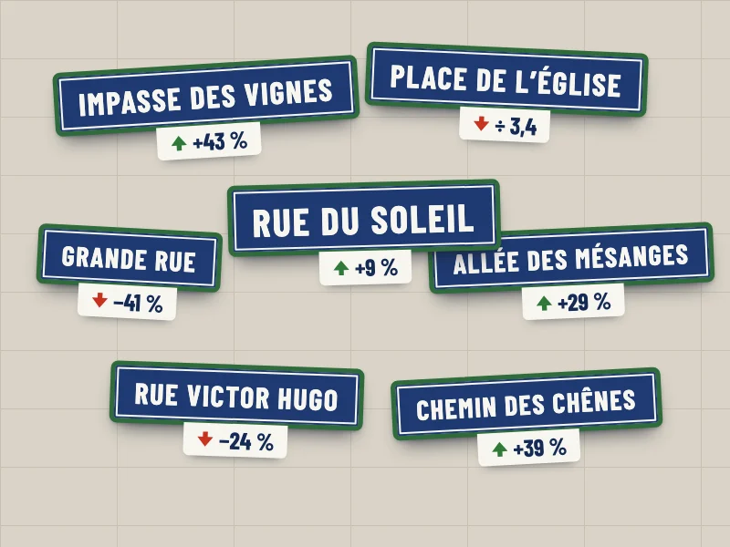

Random Maps
Des cartes construites à partir de données ouvertes, au gré des curiosités. Maps built from open data, following whatever catches my curiosity.
-

Où sont les panneaux solaires en toiture ?Where are the rooftop solar panels?
#30DayMapChallenge — Le photovoltaïque en toiture recensé dans OpenPVMapper, agrégé sur une grille de carreaux et croisé avec les données INSEE. Aussi sur deeppvmapper.fr. #30DayMapChallenge — Rooftop solar recorded in OpenPVMapper, aggregated on a square grid and crossed with INSEE data. Also on deeppvmapper.fr.
-

Plein soleil sur mon cheminSunshine on my way
#30DayMapChallenge — Les itinéraires de randonnée en France, croisés avec les installations photovoltaïques détectées à moins de 50 m du sentier. #30DayMapChallenge — Hiking routes across France, crossed with the solar installations detected within 50 m of the trail.
-

Constellation
#30DayMapChallenge — Saisissez une adresse ou laissez-vous localiser : le nombre d’installations photovoltaïques détectées autour de vous, leur puissance cumulée et leur répartition. #30DayMapChallenge — Type an address or let the page locate you: the number of solar installations detected around you, their combined capacity and how they break down.
-

Le match des surfacesThe surface showdown
#30DayMapChallenge — Panneaux solaires, pelouses de foot, piscines, ronds-points… Dans chaque commune, la surface qui prend le plus de place colore la carte. #30DayMapChallenge — Solar panels, football lawns, pools, roundabouts… In each commune, the surface that takes up the most room colours the map.
-

Une carte à l’échelle 1 : 1A map at 1 : 1 scale
#30DayMapChallenge — Mon interprétation de la carte de Borges, si grande qu’elle se confond avec le territoire. Pour repérer les panneaux solaires, c’est moins commode qu’une vue aérienne. À vous d’en juger. #30DayMapChallenge — My take on Borges’s map, so large it merges with the territory. For spotting solar panels, it is less handy than an aerial view. You be the judge.
-

PV2Mix
#30DayMapChallenge — Quelle production solaire autour de vous ? Une simulation en temps réel, de votre voisinage à une ville entière. Librement inspiré d’éCO2mix, l’outil de RTE, mais pour le solaire en toiture. #30DayMapChallenge — How much solar power is produced around you? A real-time simulation, from your neighbourhood to a whole city. Loosely inspired by éCO2mix, RTE’s tool, but for rooftop solar.
-

Le plus solarisé de FranceFrance’s most solar
#30DayMapChallenge — Mairies, écoles, gares, piscines… Quels équipements publics ont le plus de panneaux solaires détectés à moins de 100 m ? #30DayMapChallenge — Town halls, schools, stations, pools… Which public buildings have the most solar panels detected within 100 m?
-

Les rues les plus solariséesFrance’s most solar streets
#30DayMapChallenge — Rue de l’Église, Impasse des Vignes, Rue du Soleil… Quels noms de rue portent le plus de panneaux solaires par adresse ? Toutes les rues de France, comparées aux autres rues de leur commune. #30DayMapChallenge — Rue de l’Église, Impasse des Vignes, Rue du Soleil… Which street names carry the most solar panels per address? Every street in France, compared with the other streets of its commune.